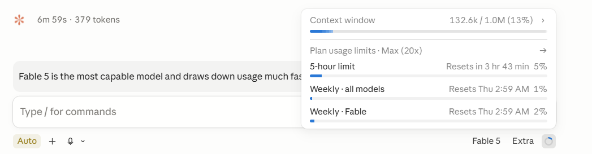

我怎麼指揮 AI：實際案例
結論先講：旗艦模型該做的是架構、規格與驗收，不是把每一段執行都自己打完。2026 年 7 月 Anthropic 把新一代旗艦模型 Fable 5 開放給付費訂閱者（使用期至 7 月 12 日），token 消耗明顯快於次級模型，故瑣碎、無需推理判斷的任務拿它來做，相當浪費。
背景：旗艦模型限時開放，額度燒得快
使用期僅限 7 月 12 日前，且官方明示 Fable 5 消耗額度更快（有獨立的每週額度）。爰此，我要它設計一套分層：重大判斷自己做，其餘指揮 Opus 執行。

為了把額度留在判斷上，我給 Claude Code 的指令其實很短：
AI 沒有照做，而是先檢查我的設計
它沒有直接排出一張分工表。先指出這是 meta 架構問題（非稅務或技術領域問題，無需讀專案檔；依據為 harness 的實際工具規格，加上我的 CLAUDE.md 與 memory），再列技術落差與修正。以下為其重點摘錄。
大方向我認同：這就是 orchestrator-worker，且與我既有的多模型盲審可以接上（Fable 對 Opus 是真正的跨模型互審，比同模型自審抓得到更多盲點）。但照字面執行會踩到 4 個技術落差，須先修正。
- 委派出去的子任務，預設仍由主模型執行（亦即忘記指定執行模型的委派，照樣燒旗艦額度，委派等於白做），故每次委派必須明確指定模型。
- 我想像中「視複雜度調整投入深度」的參數，在單次委派工具上根本不存在，要改走批次編排的路徑才做得到。
- 子任務是一段全新的對話，看不到主對話的任何脈絡，故每次委派都要附一份自包含的任務說明書；小任務委派的溝通成本，反而比主模型直接做更高。
- 指揮者出題、閱卷、裁決本身也消耗旗艦額度：委派省得掉「執行」，省不掉「判斷」。
關鍵修正：從「按重要性」改成「按判斷力槓桿」
AI 接著更改我設計的核心：
| # | 技術現實 | 對你設計的影響 | 對策 |
|---|---|---|---|
| 1 | 子 agent 預設繼承主會話 model = Fable | 忘記指定 model 的委派，照樣燒 Fable 額度，委派等於白做 | 每次委派必須明帶 model: "opus"（或 haiku/sonnet） |
| 2 | Agent tool 沒有 effort 參數（只有 model override） | 「視複雜度調 effort」單靠 Agent tool 做不到 | 兩條路：(a) 批次/多工改用 Workflow，agent() 可逐 call 設 effort low→max；(b) 建 custom agent 定義檔（frontmatter 可預設 model+effort），但建檔需你授權 |
| 3 | 子 agent 是全新 context，看不到本對話 | 每次委派要寫 self-contained brief；小任務委派的 overhead 反而比 Fable 直接做更貴 | 委派門檻（三條全過才委派）：任務自包含、輸出可壓成摘要、過程不需中途判斷 |
| 4 | 指揮者讀寫仍是 Fable token | 委派省的是「執行」，省不掉「出題＋閱卷＋裁決」 | 主會話保持精簡，沿用你既有 200k 分支決策；額度以每日 /usage 校準（我看不到 Fable 配額） |
建議的路由表（修正版）
我原本的分法是「按重要性」；它建議改成「按判斷力槓桿」：重要但機械的活照樣下放，Fable 的判斷用在 spec 和驗收兩端，不用在打字上。
修正後的分層：
| 層級 | 執行者 | 任務類型 |
|---|---|---|
| L1 | 旗艦模型親自做 | 架構與策略設計、多重規則交互的判斷、跨任務結果的整合裁決、關鍵文字定稿 |
| L2 | 次級模型（高投入） | 有明確規格的複雜執行：報告初稿、複雜程式、多來源研究彙整 |
| L3 | 次級模型（低投入） | 機械批次：檔案掃描、格式轉換、引用查核、資料抽取 |
配套三條規則：
- 委派門檻：任務自包含、輸出可壓縮成摘要、過程不需中途判斷，三條全過才委派。雖把工作丟出去很省事，但由於子任務看不到主對話脈絡，說明書寫不清楚時返工成本更高，故不如主模型直接做。
- 委派任務遇到不可逆動作、來源互相矛盾、或信心不足時，一律停下來回報，不自行往下做。
- 跨模型互審：次級模型的產出由旗艦模型驗收；反過來，旗艦模型自己的產出，交給另一個模型獨立盲審（自己審自己的東西不算數，這是我行之有年的守則）。
雙視角驗算
同一套修正亦可由另一角度驗算。從額度看，判斷集中在規格與驗收、執行下放，旗艦 token 才不會耗在打字上；從品質看，次級模型產、旗艦模型審，再加跨模型盲審，比單一模型自產自審多一層把關。兩個角度指向同一結論，故這套修正版才定案。
最後由我審核定案
整段互動裡，AI 指出我的設計與系統現實的落差，並提出修正方案。惟重要、但規格已經明確的工作該歸哪一層，由我決定走「次級模型產、旗艦模型審」；整套模式要不要採用、授權範圍到哪裡，也是我決定。
這正是我在〈關於傑夫哥〉與〈服務項目〉寫的那句話的具體展開：程式與文字可以由 AI 產出，價值在於流程設計與驗證把關。指揮 AI 的核心不是下指令的話術，而是你自己得先有一套判斷標準，讓 AI 的反駁有東西可以對照，讓最終的裁決有依據。
需要為你的團隊設計 AI 研究工作流？
這類 AI 研究工作流的設計和構思，是我承接的服務之一，詳見〈服務項目〉第 3 項「AI 研究自動化顧問」。